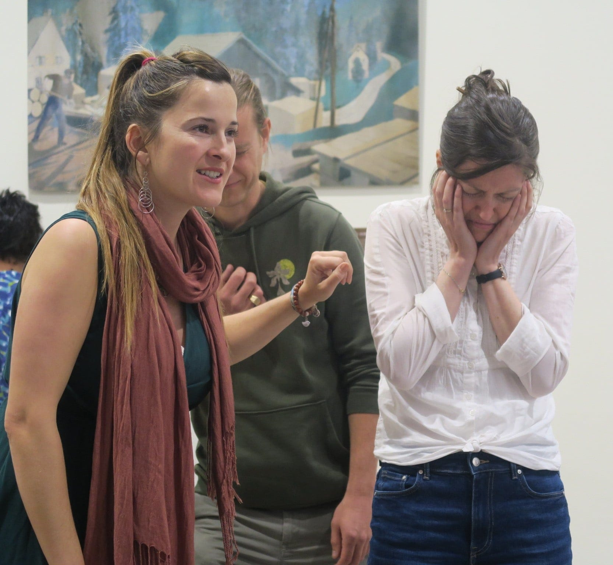
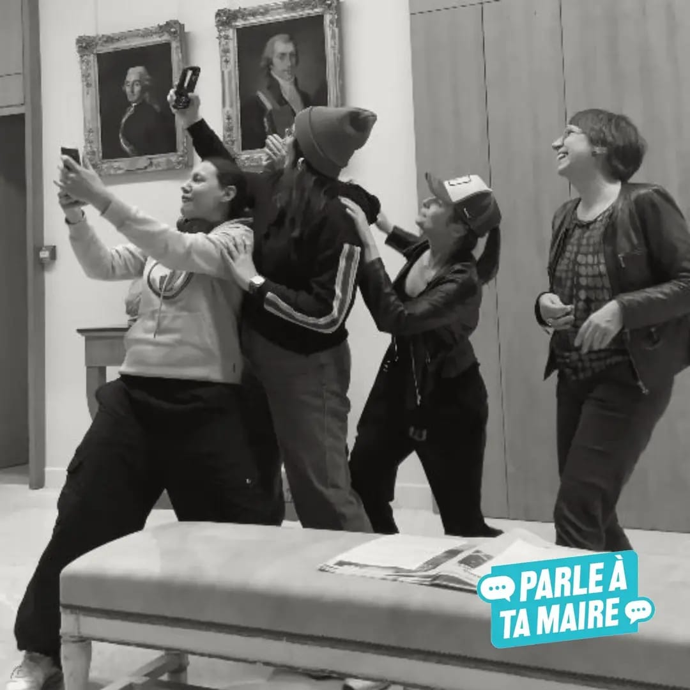
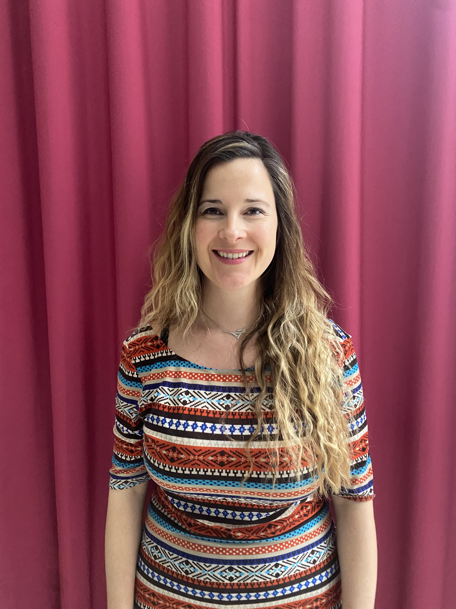
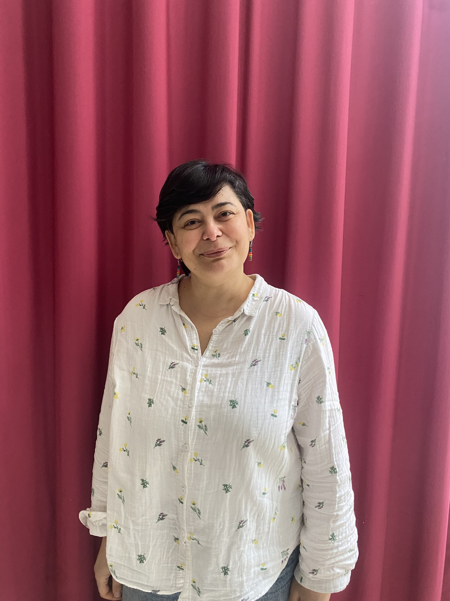
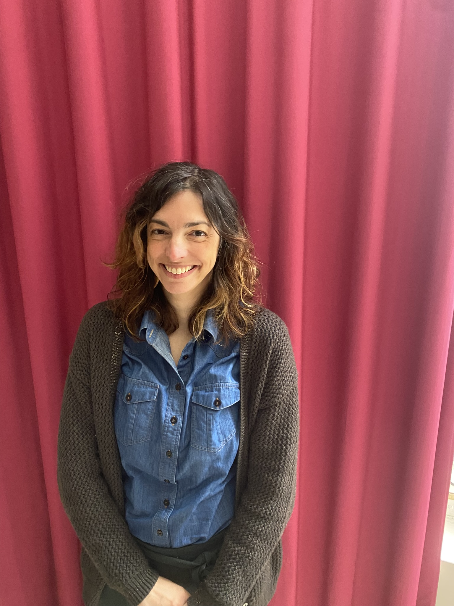
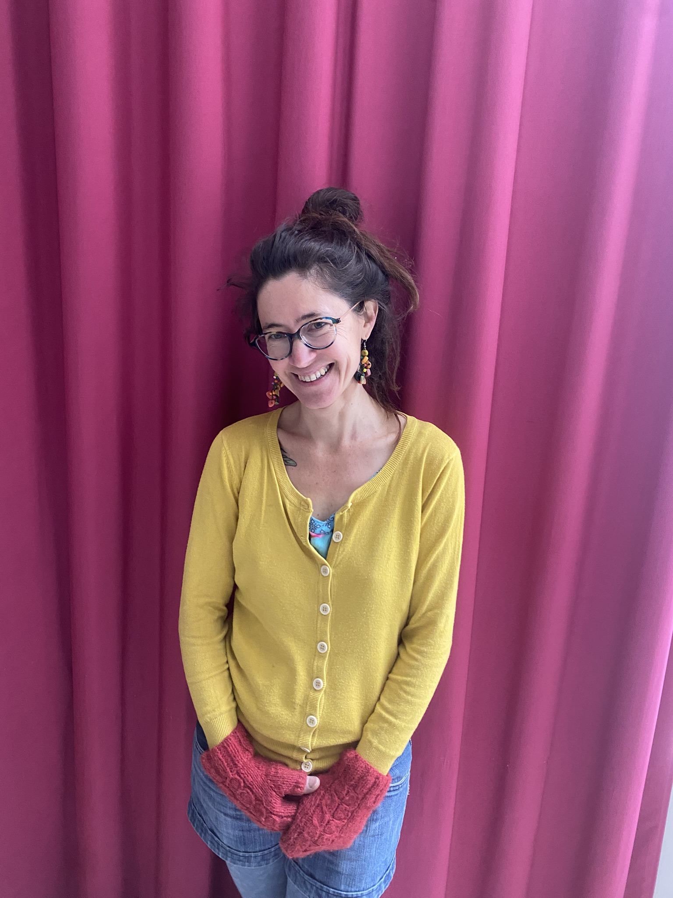
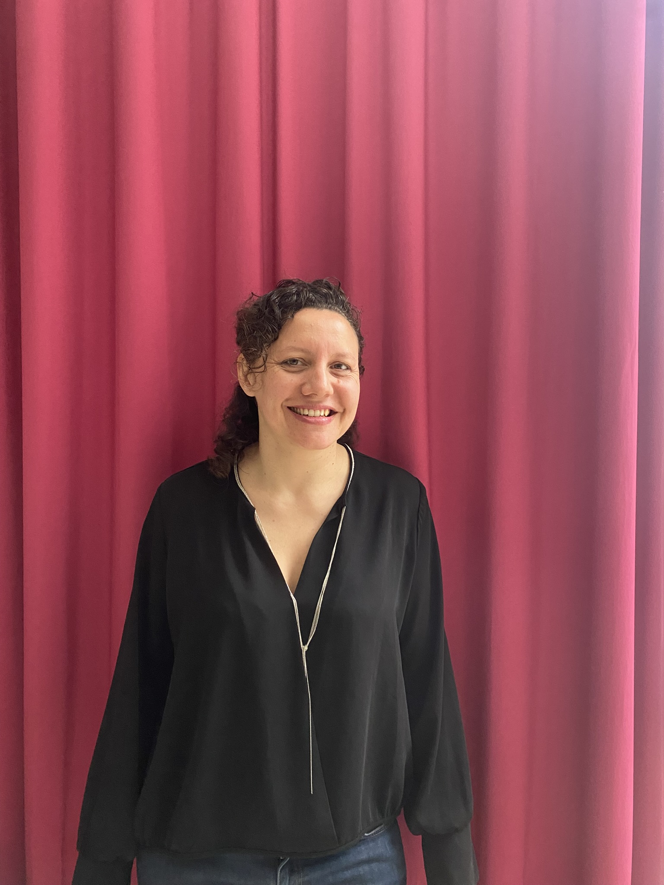
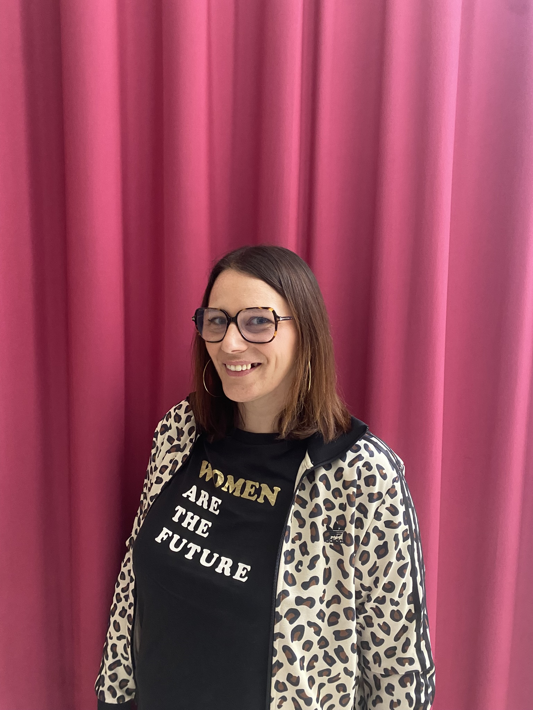

L'association MAR (Méthodes Alternatives de Régulation) a été créée en 2023. Elle utilise l'approche du théâtre de l'opprimé pour promouvoir le dialogue social et la transformation de situations problématiques, à travers des ateliers, des stages et des représentations en théâtre forum.
La fondatrice Laure Faget fait la découverte du théâtre de l'opprimé en Colombie et elle tombe en amour de cette approche ! Elle suit alors une formation de formateurs là-bas. Très inspirée du combat d'Augusto Boal pour révéler et transformer les rapports d'oppression, Laure est fascinée par la richesse de toutes les dynamiques issues de cette approche.
Après plusieurs années en Amérique du Sud, elle rentre en France et décide de créer l'association pour faire découvrir et faire rayonner le théâtre forum. La rencontre avec des comédien·nes inspirant·es et engagé·es a donné naissance à ce collectif qu'est MAR.
Ceux qui pratiquent le théâtre de l'opprimé recherchent la paix, conscients que le plus grand ennemi de la paix est la passivité.
Augusto Boal

MAR signifie MER en espagnol. La mer connecte les différents pays et leurs habitant·es, sans frontières. Son immensité nous apaise, nous élève et nous transcende.
Plusieurs démarches et techniques : théâtre forum, théâtre invisible, improvisation, dynamiques de jeux pour favoriser un mieux vivre ensemble.
Le théâtre forum est un outil très pertinent pour trouver d'autres chemins, d'autres voies à des situations difficiles et complexes.
Faciliter le dialogue, transformer les situations de tension pour ouvrir le champ des possibles et trouver d'autres modes de fonctionnement.


Médiatrice, formatrice et consultante. Juriste de formation, formée au théâtre de l'opprimé en Colombie en 2015. Fondatrice de l'association MAR en 2023.

Comédienne et intervenante en improvisation théâtrale depuis 1999. A travaillé pendant 17 ans auprès de publics en situation de handicap.

Éducatrice spécialisée pendant 20 ans, puis ingénieure sociale (DEIS). Engagée pour la lutte contre les inégalités et formée à la pratique du théâtre forum.

Directrice à l'école alternative Grandir Ensemble. Praticienne du théâtre forum et du théâtre d'improvisation.

Travailleuse sociale depuis plus de 15 ans, responsable de services médico-sociaux et formatrice à l'IRTS. Pratique le théâtre d'improvisation depuis 10 ans.

Pratique l'improvisation à Besançon depuis plus de 15 ans. Intervenante en théâtre d'improvisation depuis 10 ans, tournée vers le théâtre forum en 2023.
Passionnée de musique et de formes artistiques variées. A découvert le théâtre forum en 2023 et rejoint l'association MAR en 2024.
Enseignante de français pour les étrangers et d'italien. Anime des formations en communication à l'Université et en entreprise. Pratique l'improvisation et le théâtre forum.